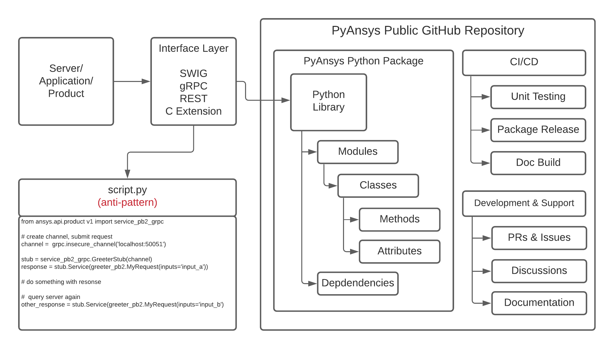

Library Overview¶
A PyAnsys library eliminates the need to share snippets of code that perform actions. Users can instead create workflows consisting of their own Python modules and third-party libraries. This extends Ansys’s products in a way that matches how libraries are created in the Python community while maintaining the separation between products, APIs, and PyAnsys client libraries.
To avoid the anti-pattern of providing single-use scripts, the general pattern for a PyAnsys library ensures:
Clear, open-source APIs that are consistent with community standards are hosted on GitHub
Reusable packages can be updated and patched outside of the Ansys release schedule, while still being directly dependent on Ansys products
Unit testing, release packaging, and documentation
This figure shows the general pattern that each PyAnsys library should follow:
The Ansys product or service exposes an interface that is locally accessible (for example, .NET using pythoncom, SWIG, or C extensions) or a service that is both locally and remotely accessible (REST or gRPC). This interface is referred to as the API (Application Programming Interface). While this API can be directly accessed, this often results in unreadable and unmaintainable code that forces users to rewrite setup boilerplate and other methods from scratch. Therefore, the best practice is to create a Python layer that maps the raw API into a carefully designed, object-oriented data model and API.
Template¶
Within the PyAnsys Organization, there is a template repository where you can create a repository from a template and create a PyAnsys project that follows the guidelines specified in this developer’s guide.
The template repository contains a generalized library skeleton that includes:
Library skeleton with sample classes and methods
Sample documentation build including customized templates
Sample GitHub actions specific to PyAnsys libraries
Licensing, example README, and setup files
.gitignoreand other requirements files
To use this template, create a repository from a template.